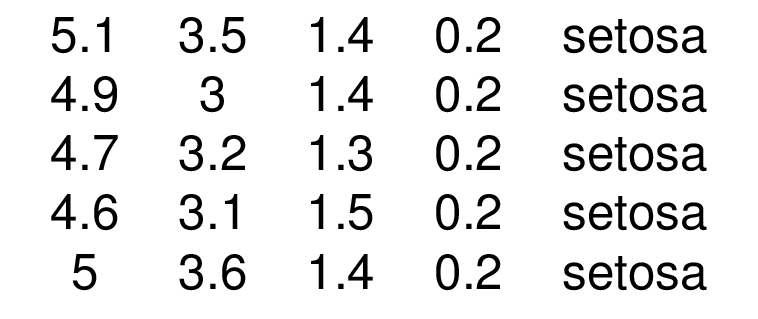
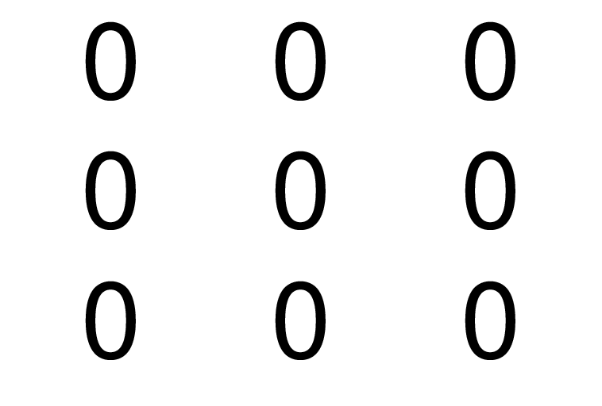
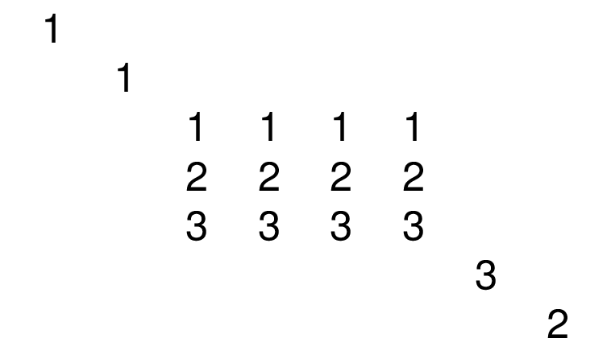
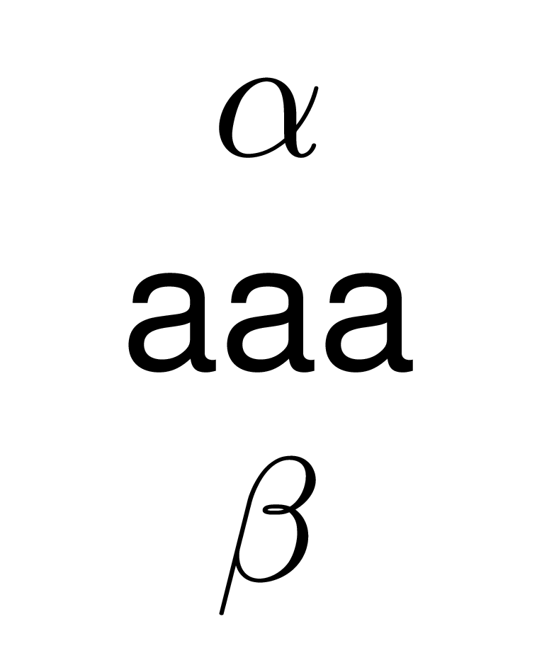
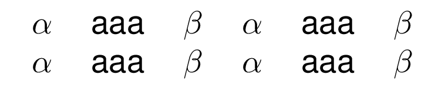
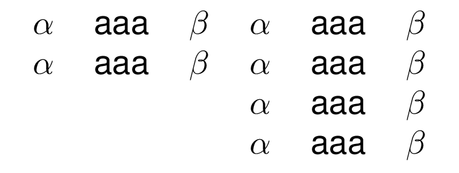
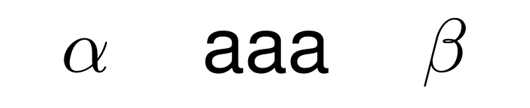
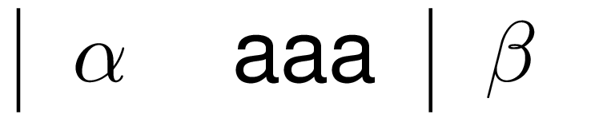

vignettes/basics.Rmd
basics.Rmd
library(texblocks) library(texPreview)
as.tb('$\\alpha$') #> $\alpha$ as.tb('aaa') #> aaa
rep(as.tb('$\\alpha$'),3) #> [[1]] #> $\alpha$ #> #> [[2]] #> $\alpha$ #> #> [[3]] #> $\alpha$
lapply(1:3,as.tb) #> [[1]] #> 1 #> #> [[2]] #> 2 #> #> [[3]] #> 3
iris%>% head(5)%>% as.tb() #> 5.1&3.5&1.4&0.2&setosa\\ #> 4.9&3&1.4&0.2&setosa\\ #> 4.7&3.2&1.3&0.2&setosa\\ #> 4.6&3.1&1.5&0.2&setosa\\ #> 5&3.6&1.4&0.2&setosa\\

matrix(0,3,3)%>% as.tb() #> 0&0&0\\ #> 0&0&0\\ #> 0&0&0\\

Matrix::bdiag(Matrix::Diagonal(2), matrix(1:3, 3,4), diag(3:2))%>% as.tb() #> 1& & & & & & & \\ #> &1& & & & & & \\ #> & &1&1&1&1& & \\ #> & &2&2&2&2& & \\ #> & &3&3&3&3& & \\ #> & & & & & &3& \\ #> & & & & & & &2\\

matrix(1:9,3,3)%>% as.tb()%>% as.data.frame() #> # A tibble: 3 x 3 #> `1` `2` `3` #> <chr> <chr> <chr> #> 1 1 4 7 #> 2 2 5 8 #> 3 3 6 9
x <- as.tb('$\\alpha$') y <- as.tb('aaa') z <- as.tb('$\\beta$') x1 <- x+y+z
x/y/z #> $\alpha$\\ #> aaa\\ #> $\beta$

Combined texblocks are texblocks themselves, thus can be further combined.
x2 <- x1 / x1 # 2x3 object x2 + x2 #> $\alpha$&aaa&$\beta$&$\alpha$&aaa&$\beta$\\ #> $\alpha$&aaa&$\beta$&$\alpha$&aaa&$\beta$\\

x3 <- x2/x2 # 4x3 object # 4x6 object with empty block in the lower right hand side of the table x2 + x3 #> $\alpha$&aaa&$\beta$&$\alpha$&aaa&$\beta$\\ #> $\alpha$&aaa&$\beta$&$\alpha$&aaa&$\beta$\\ #> &&&$\alpha$&aaa&$\beta$\\ #> &&&$\alpha$&aaa&$\beta$\\

# default alignment x1%>% texblocks::tabular()%>% texPreview::tex_preview()

# manual alignment x1%>% texblocks::tabular(align = '|cc|c')%>% texPreview::tex_preview()
